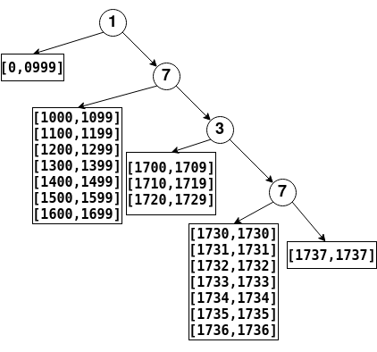

数位dp
前言
之前刷其他的题目的时候，看到过数位dp解法，但是太菜了，根本看不懂!
今天刷leetcode的每日一题时，题目虽然用了别的方法做出来，但是太丑了，非常多的判断。在看别人的解析的时候，突然看到数位DP模板级解法，一下突然懂了。
特别记录一下这个瞬间，自己又进步了一点。🚩
数位dp
首先，我们正式的(不讲人话)的介绍一下数位dp算法
数位dp算法是用来解决如下问题的算法
求出在给定区间内，符合条件的数$i$的个数。条件一般与数的大小无关，而与数的组成有关
这就是一般的数位dp算法的介绍，然后后面就直接跟例题和代码了，大家都是谜语人么?
这里我再介绍一下数位dp的一种通用解法，从而更好的理解这个优美的算法
数位dp通用解法
一方面，由于前面介绍的条件与数大小无关，而仅仅与数的组成有关，因此数位dp需要通过动态规划的方法，预处理出一个dp[i][j]的数组，dp[i][j]表示长度为,最高位为的符合条件的个数
另一方面，数位dp更多的可以理解为一种根据其数的组成的遍历顺序——该遍历顺序可以让我们有效的结合动态规划解决问题。
即如果对于区间，实际上我们遍历的时候，从最高位向最低位开始遍历(即从第位向第位遍历);每次遍历第位的的时候，从到。当遍历结束后，固定第位为，继续以相同的方式遍历后边的数。
可能听起来还是比较迷惑，下面给出一个具体的数值，以及其相关的遍历顺序图
如果我们要遍历，则其遍历的顺序如下所示

那么要求解中，满足符合条件的数$i$的个数就非常简单了——按照前面的遍历顺序，第次遍历，前位是固定知道的，后几位的最高位为，则可以调用前面的预处理的数组快速求解
样例 不含连续1的非负整数
题目描述
给定一个正整数，找出小于或等于的非负整数中，其二进制表示不包含连续的1的个数
说明: 1 <= n <= 109
示例1:
输入: 5
输出: 5
解释:
下面是带有相应二进制表示的非负整数<= 5：
0 : 0
1 : 1
2 : 10
3 : 11
4 : 100
5 : 101
其中，只有整数3违反规则（有两个连续的1），其他5个满足规则。
来源：力扣（LeetCode）
链接：https://leetcode-cn.com/problems/non-negative-integers-without-consecutive-ones
题目分析
可以看到，其符合条件与其数字大小完全没有关系，仅仅二进制中的数字组成相关，因此理论上就可以通过数位dp进行求解
数位dp涉及两个方面:
- 预处理的数组
根据题目所属，只要不包含连续的1即可，那就是最简单的动态规划，dp[i][j]表示长为的二进制数字，在最高位为的情况下不包含连续的1的数字个数。其数组长度不超过32(),每一位就是二进制的或。若当前位为，则低一位是或都可以;若当前位为，则低一位只能是，其相关代码如下所示1
2
3
4
5
6
7int dp[32][0];
dp[0][0] = dp[0][1] = 1;
for(int i = 1; i < 32; ++i) {
dp[i][0] = dp[i][0] + dp[i][1];
dp[i][1] = dp[i][0];
} - 数位遍历
下面则是按照前面的分析进行遍历，由于是二进制，则每一位只能是或，每一个情况如下
- 如果当前遍历位的值是0，根据前面的算法，没有可以遍历的值(从到)，则继续下一位
如果当前遍历位的值是1，则根据前面的算法，其可以遍历的值是()。因此其中满足条件的个数就相当于dp[i][0]，即二进制数字长度为i，最高位为0的不包含连续的1的数字的个数
这里还需要注意一下，当遍历过程中连续两次遍历到1,此时就可以退出遍历了——根据算法，在之后的遍历过程中，这两位始终保留，因此遍历到的数值必然不可能满足条件
完整代码
最后，根据前面的题目分析，可以很容易的写出来最终代码
1
2
3
4
5
6
7
8
9
10
11
12
13
14
15
16
17
18
19
20
21
22
23
24
25
26
27
28
29
30class Solution {
public:
int findIntegers(int n) {
int idx = 31, res = 0, prev_bit = 0;
while(!(n >> idx)) { --idx; }
int dp[idx + 1][2];
dp[0][0] = dp[0][1] = 1;
for(int i = 1; i <= idx; ++i) {
dp[i][0] = dp[i - 1][0] + dp[i - 1][1];
dp[i][1] = dp[i - 1][0];
}
for(int i = idx; i >= 0; --i) {
int current_bit = (n >> i) & 1;
if(current_bit) { res += dp[i][0]; }
if(current_bit && prev_bit) { break; }
prev_bit = current_bit;
if(!i) { ++res; }
}
return res;
}
};